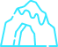
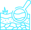
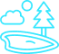

МАРШРУТ ЭКСКУРСИИ:

Перемещение экскурсантов предполагается на экскурсионном автобусе

Кампус Евразийского НОЦ
ул. Заки
Валиди, 32/2


Идрисовская пещера
Идрисовская
пещера
(Идрисово, гостиница «У Пещеры»)

Мечетлинский геологический
разрез
Мечетлино, ул. Центральная, д. 44
Музей Салавата Юлаева
Малояз, ул.
Советская, д. 61А

Геокурорт Янган-Тау
Янгантау, ул.
Центральная, д.20
Родник Кургазак
Комсомол, ул.
Кургазакская, д. 57